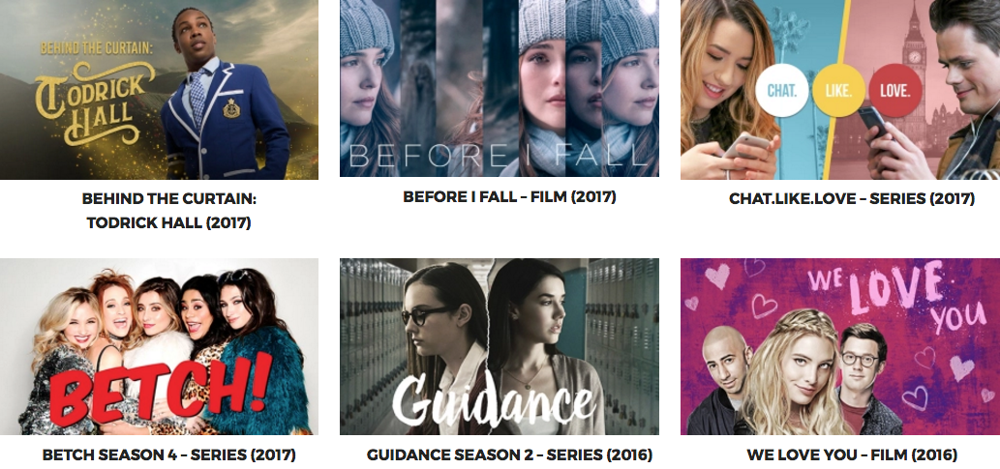

My Journey as a Data Scientist
Annie Flippo
I work as a Sr. Data Scientist
at AwesomenessTV
We make content for on-demand streaming platforms

Education
Interests
Physics ...
... Math ...
Economics ... Econometrics ... Programming
Internship
My Internships
Alberta Energy
National Research Council
Department of Defense
More Grad School?
My First Job - Programmer
Product Manager
Design Development and Release Strategies ...
Manage Resources & Create QA Plans ...
Manage Time ... User Experience ... Customers
Great Training Ground
Worked at Companies
Big and Small
Stay at Home Mom
Stay Current with Technology
Continue to study
Plan to return to work
Get a Certification
Database Administrator
As a DBA, I worked as a/an
ETL Engineer
Data Analyst
Security Engineer
At the same time, I was Retooling

Massive Open Online Classes
More Statistics ...
Visualizations ...
R ... Python ... Machine Learning
I became a Data Scientist
Well, I've been doing this for while now
Customer Intent
Customer Segmentation
A/B Tests to improve Ad CTR
A Day in the Life
Code Data Science APIs
Understand Social Data
Grow Our Audience
Improve ROI on everything ...

Predict YouTube Views
Predict Success of new Series
NLP to match assets
A/B Tests to increase ROI in Ad Spend
We're Hiring!
Looking for people who:
Loves and understands data
are Effective Communicator
are Great Coder
http://careers.awesomenesstv.com
Get Involved
I volunteer:
Guest Lecturer & Panel Speaker
Conferences & Meetups
We Quant LA (wequantla.com)
What I'm interested in ...
Neural Networks
Artificial Intelligence
Self-Driving Cars
Advanced Lane Line Detection
Behavioral Cloning to Drive a Car
Vehicle Detection and Tracking
Drumroll Please ...
Love What You Do
and ...
Do What You Love!
Simple, right?
Thank You